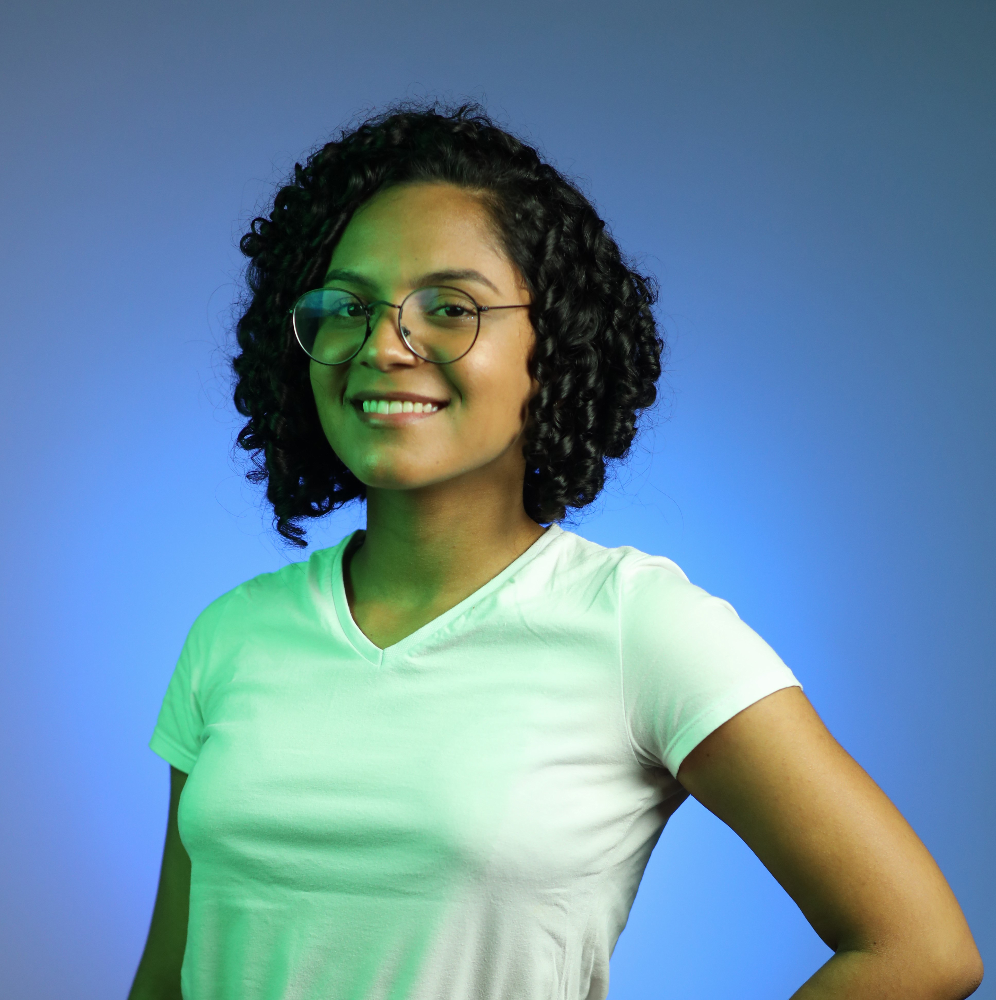

Laisa Marcelino
Olá! Me chamo Laisa, tenho 20 anos e nasci e cresci em Janaúba-MG. Atualmente moro em Curitiba-PR e curso Engenharia de Bioprocessos e Biotecnologia na Universidade Federal do Paraná. Com 18 anos me formei como Técnica em Informática para Internet, no IFNMG-Campus Janaúba, mas decidi sair da área tech para explorar o mundo da Biotecnologia. Após 2 anos de graduação percebi que não me identificava com a área e retornei ao mundo da Informática por meio de um curso focado em Desenvolvimento Web Full Stack oferecido pela EBANX em parceria com a Resília Educação, bem como por meio da mudança de graduação para um Bacharelado em Ciência da Computação. De modo geral, sou uma pessoa muito focada nos meus objetivos, cujo maior deles é ser feliz em minha profissão.
Interesses e Hobbies
Profissionalmente me interesso pela área de desenolvimento de software, a programação back-end é minha paixão. Mas, para além disso, nas horas de lazer gosto de estar com meus amigos e família para viajar, conversar ou praticar meu esporte favorito.

Imagem 1

Imagem 1
Imagem 1
Imagem 1